Analyzing a decade of NHL Hockey
Seasons from 2010 to 2019
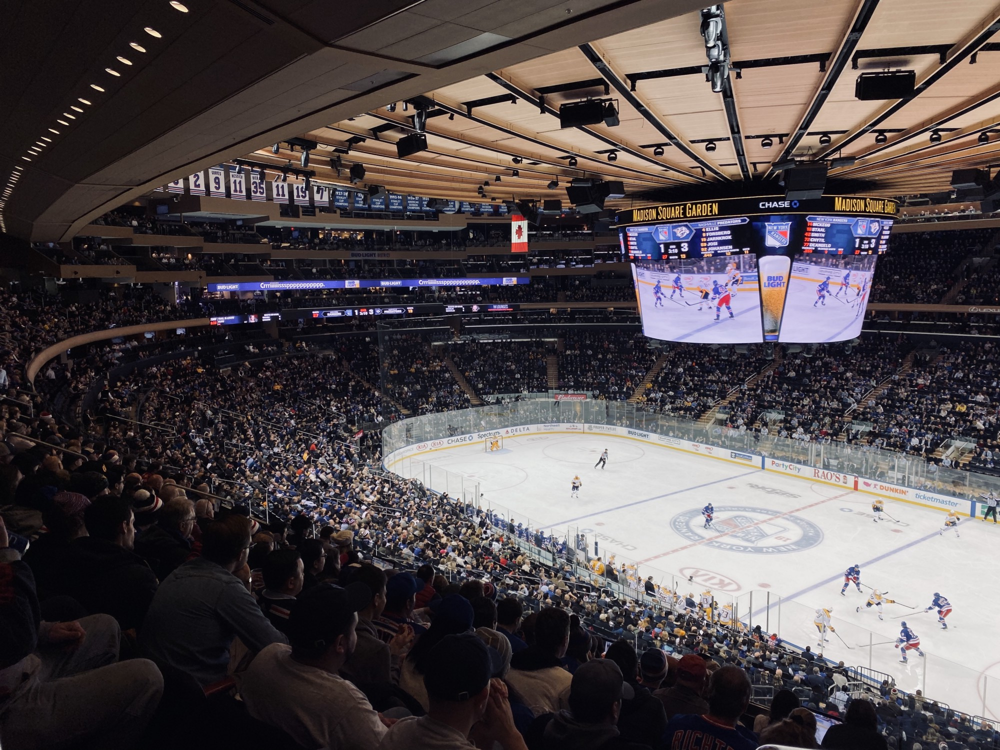
The first time I laced a pair of skates I was just 6 years old. My younger brother was just 4. At age 9 I started training in figure skating. One day I was trying to do a very simple jump I was struggling with following the circle on the right of the rink when the hockey team arrived. I don’t know how to explain it. The sound of their skates in the rink when they stopped just blew my mind. That sound of wheels against the tile. The delicate sound of the ball hitting the stick when passing it. That day I was sold. After my practice, I spoke with my coach and I switched that same day to hockey. The President of the club I played all my amateur career gave me her son’s stick, a small one for junior players. I never figured skated in my life again. Since that day I was a hockey player and was making that beautiful sound myself. This wasn’t ice hockey. This was roller blade hockey, 4 wheels in parallel.
The motivation for this work
Today I don’t play it anymore and I never had the chance to play ice hockey. With this work, I am combining my two passions: data science and hockey.
The principal motivation of this work is to start looking at some answers to questions I have regarding the last decade’s hockey results. I am going to answer the following questions based on the data I found in Kaggle.
- What are the league’s best goalies?
- What are the league’s best scorer players?
- What are the teams that score more goals?
- What are the players that have most penalty minutes per team?
- What is the most prolific country producing NHL players?
Let’s start our analysis. The notebook with the details and data cleaning and merging of the several CSV files can be found on my GitHub repository.
The “Country that produces more NHL players” graph source is here. The graph was uploaded to Tableau public for easy access.
What are the league’s best goalies?
I started with the goalies because I found a very important issue with the save percentage score once I got to them in my work. If we graph the top 10 goalies based on save percentage score in descending order we get the following graph:
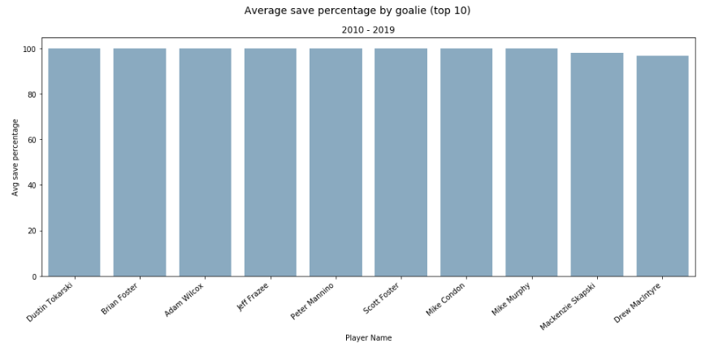
What happened here? None of them are the goalies we are so used to see every game night and all have 100% average save percentages! The answer is these are mostly “emergency goalies”. Do you remember Scott Foster who was Blackhawk’s famous contracted emergency goalie? He never suited up for an official game during his tenure with the team. Until that lucky night during the 2017–2018 season when all Blackhawks’ goalies were injured and he was called out to (finally) dress up. He played “the longest 14 minutes of Hockey” of his life as he described it himself in one of the countless interviews he did afterward. He played ~14 minutes and did not receive a goal, so his save percentage is 100% (for his entire NHL career!). To take care of this I considered two alternatives:
Eliminate all goalies with 100% save percentage
This alternative is not fair of seasoned goalies and players in general. Veteran goalie players enter the rink to replace the starting goalie when have already received 3–4 goals (or more). So they deserve the good 100% save percentage on these circumstances.
Determine a minimum number of seasons to be considered in the analysis
This approach also has some caveats as this arises the question of what does make the minimum number of seasons correct? In spite of this concern, I have selected this option. I decided to set a minimum of 5 seasons with 81 games per season (41 home ice plus 41 away games).
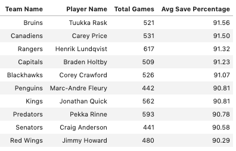
Now we see the usual suspects. Tuukka Rask being the goalie with better avg. save percentage followed by two of my favorites: Carey Price and Henrik Lundqvist. As you can see here their numbers are very close to each other. It is thought to be an NHL goalie! The expectations are very high.
What are the league’s best scorer players?
Let’s start looking at the best players in terms of total goals.
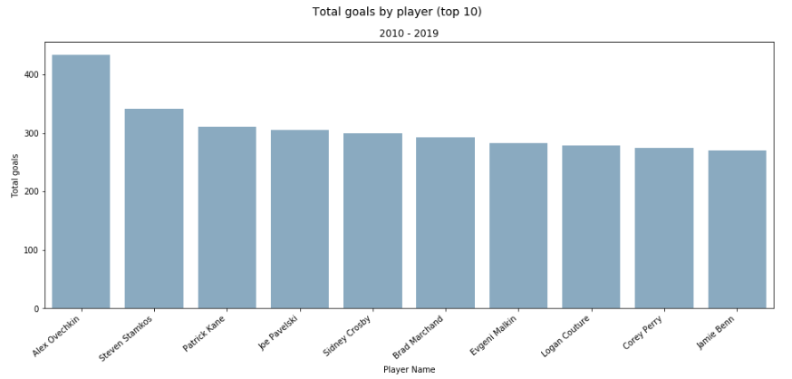
This does not really tell us the whole story. This is not 100% accurate or fair as there are players that play fewer games than the others but do score more goals per game and/or per time on ice (minutes played per game). Let’s look at the same metric but now taking into account games played.

The goals per game tell us that Alex Ovechkin maintains the first place as he plays a lot of games and scores a lot too! He scores almost a goal every other game. Steven Stamkos follows with a very similar number but has played more than 100 fewer games compared with Ovechkin. Sidney Crosby and Evgeni Malkin had jumped to the top making the Penguins a very dangerous team! No surprise almost all are captains of their respective teams and forwards/wings. Tyler Seguin from the Dallas Stars has played significantly fewer games, just 489 but hold the 5th position, so he’s very effective scoring goals. On the other hand, Patrick Kane has the second high position in games played (on this list) but very low goals, positioning him in the second to last spot.
Let’s look at the players that spend more time on the ice now to see if this relates to the number of goals.
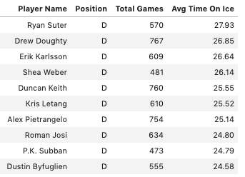
Sorting the list by time on ice (TOI) the top 10 are all defensemen. The average for defense is around 14–25 minutes per game. That is almost half the game! Ryan Sutter plays lots of minutes despite not being present in a lot of games. Drew Doughty form the LA Kings has been playing almost half a game consistently during this decade.
Filtering out the defensive players out we see the forwards average TOI.
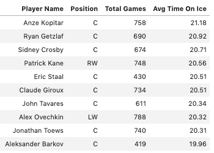
Forwards play less time on the ice as they tend to skate more. Anze Kopitar, Ryan Getzlaf and Sidney Crosby top the chart. Alex Ovechkin doesn’t top this chart but is a very effective player as his goals per game mark.
What are the teams that score more goals?
I have averaged the Top 3 scorers per team goals to put the scoring power per team into perspective. The following graph shows the team with more scoring power thanks to its three top-scoring players.
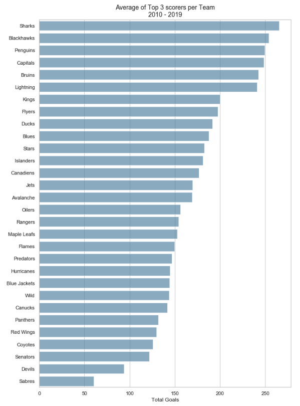
Here we can see the Sharks top 3 players scored more goals in the last decade that the rest of the teams. They are followed by the Blackhawks and Penguins in second and third place respectively as the most dangerous teams. The Capitals, however, are just in position #4 despite Alex Ovechkin’s tremendous production.
Surprisingly, when looking at the goals per game by team the Stars are the team that scores more goals per game (1 goal every 3 games guaranteed!). They are followed by the Lightning, Panthers and Oilers. The Penguins are in the fifth position a little short of scoring 1 goal every three games.
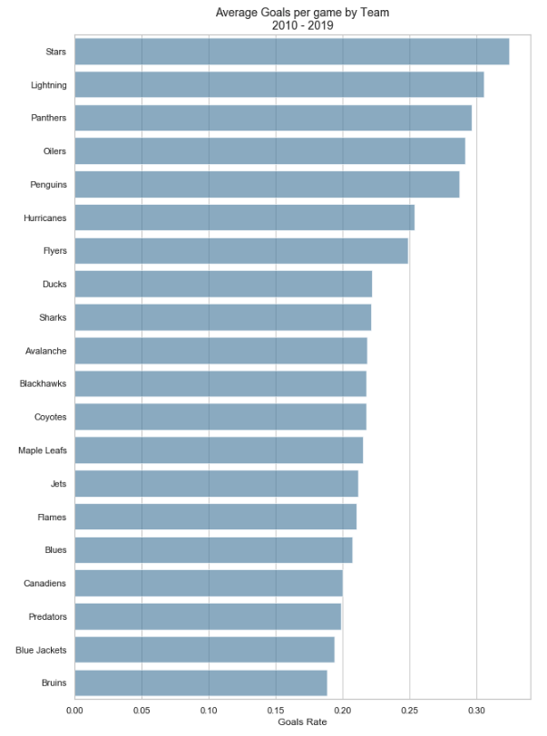
What are the players that have most penalty minutes per team?
Surprisingly these are no defense. They are forwards. Senators Chris Neil tops the chart sitting in the penalty box 10 times per 6 games!. He is followed by Cody McLeod and Tom Wilson each sitting in the penalty box once every game. All very well known for their strength and physicality.
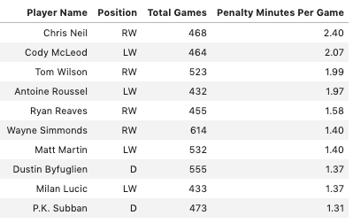
What is the most prolific country producing NHL players?
It should not be any surprise to find out that Canada provides more players to the NHL than any other country.
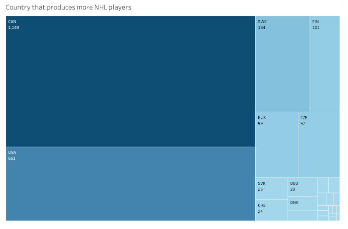
The number of Canadian players in the last decade total 1,149. Followed by the USA with 651 and then Sweden with 184. Canadian players almost double the number of American players which in turn almost quadruples the number of players from Sweden.
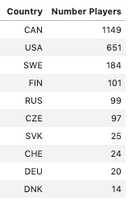
The rest of the top 10 countries only totals 380 players.
Conclusion
This is just a descriptive analysis of a decade of NHL hockey. During the duration of this work, a lot more questions arose that I left out from this post to be able to finish it on time. I am planning to follow up this post with a second part where I will try to answer other interesting questions. Things that will come in the future post(s) are, for example:
- How do teams combine penalty minutes relate to the team losing the game?
- Does it have any relation to the team playing in home ice or away?
- Do top scorers make a difference in the last period (3rd period) or Overtime (OT) in the games?
Did your favorite player show up in the ranking presented in this work? Let me know in the comments. Also, let me know what else will you be interested in seeing analyzed in the second part. Thank you for reading it!